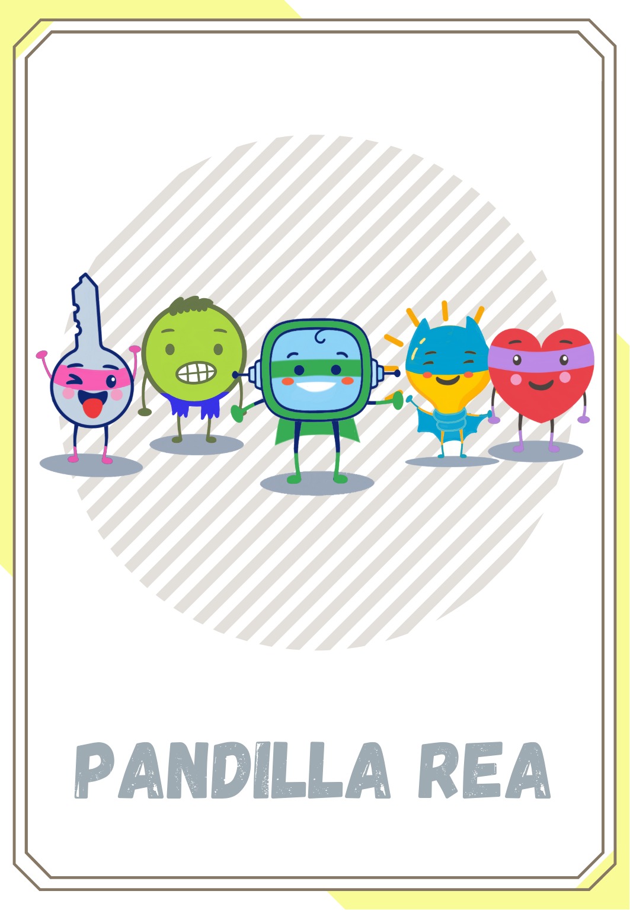

Diccionario Diccionario
Individual

Definición
Que tiene carácter particular e independiente dentro de un conjunto.
Ejemplo:
En clase trabajamos de forma individual, cada uno solo, y en grupo con los compañeros.
Opción

Definición
Libertad o facultad para elegir.
Ejemplo:
En mi armario tengo varias opciones para elegir que me pondré hoy.
Pandilla

Definición
Grupo de amigos que suelen reunirse para divertirse en común.
Ejemplo:
La pandilla Rea te enseñará muchas cosas durante este curso.
Rutina de pensamiento

Definición
Permiten organizar los conocimientos siguiendo unos patrones determinados que se adaptan a las distintas situaciones posibles, facilitando el pensamiento crítico, creativo y autónomo.
Ejemplo:
Las rutinas de pensamiento nos ayudan a aprender mejor lo que vemos en clase.
Secreto

Definición
Conocimiento que exclusivamente alguien posee de la virtud o propiedades de una cosa o de un procedimiento útil en medicina o en otra ciencia, arte u oficio.
Ejemplo:
Me dijo en secreto dónde escondía su juego favorito.

.png "Presentar")